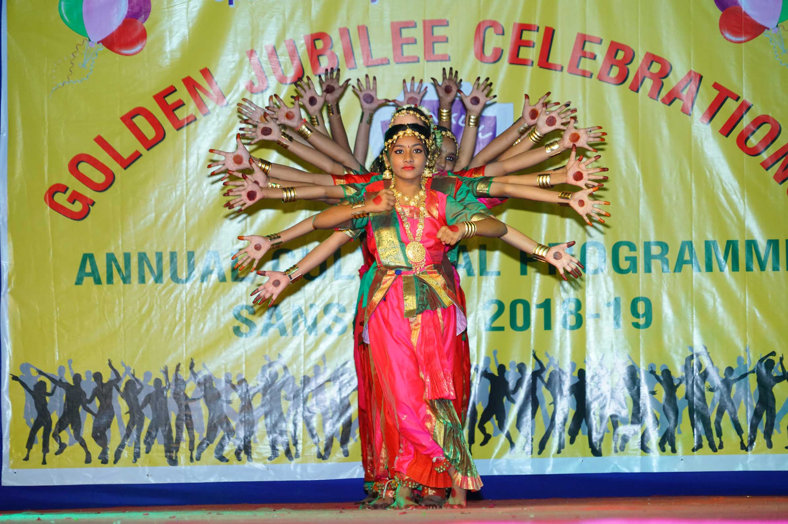

Gallery
Festivals, sports days, competitions and the ordinary working days in between.
Our albums
What the school year looks like
Diwali Celebration
48 photographs
Aluna Celebration
12 photographs
Sports Day — Utkarsh Udaan
9 photographs
Story Telling Competition
6 photographs
Navratri Celebration
4 photographs
Annual Day 2018
Photo album
Mother’s Day Celebration
Photo album
Advertisement Day
Photo album
Photographs
Browse the collection
Click any photograph to open it full size. Use the arrow keys to move through the set.
See it in person
Photographs only go so far. Call the section office and arrange to walk through the campus on a working day.